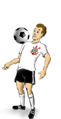
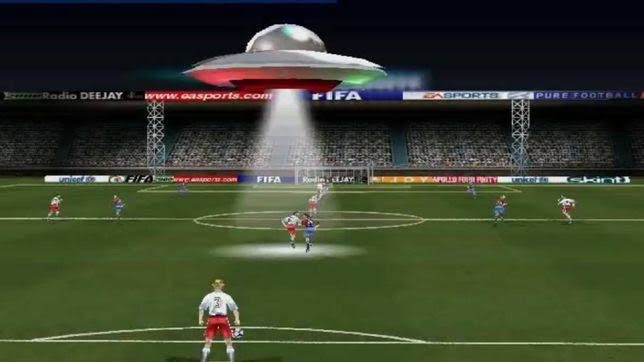
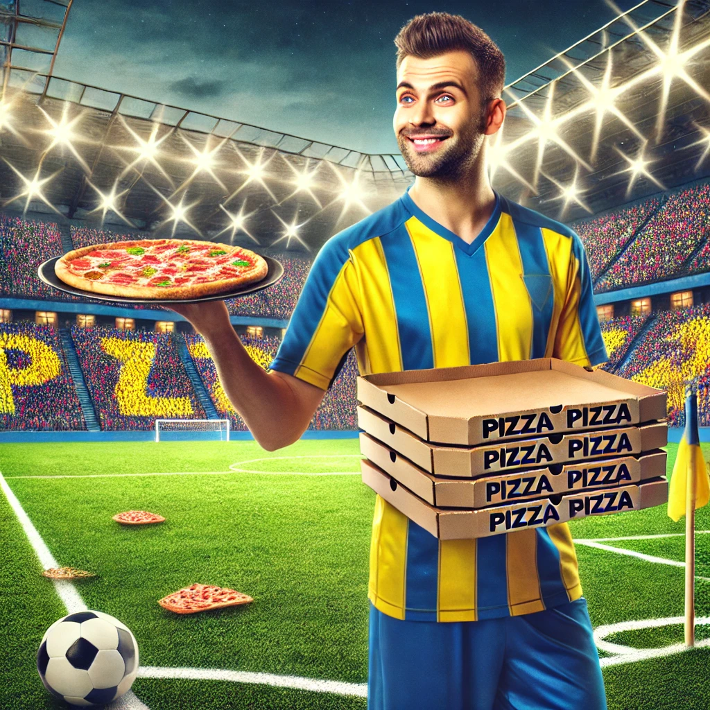
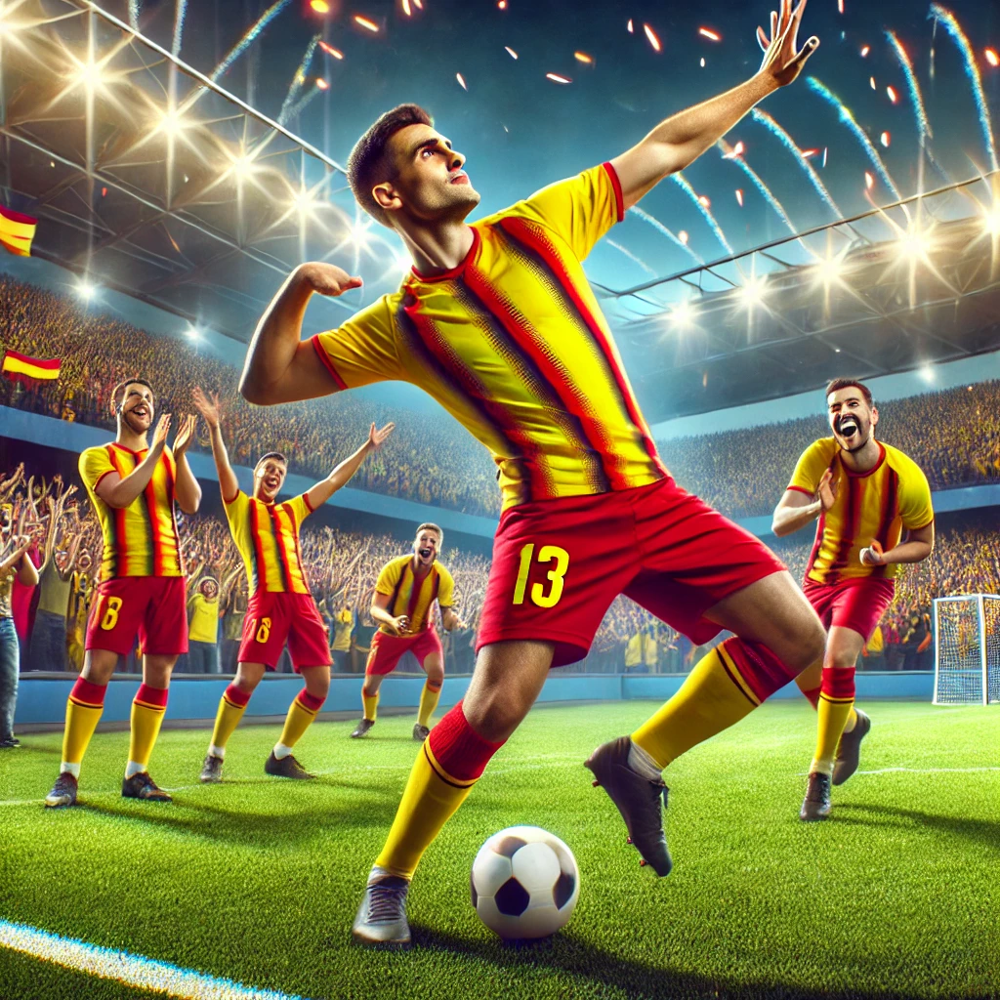

Güncel Puan Durumları:
- Süper Lig

- Serie A

- Bundesliga

- Premier Lig

- openai ekibi
- Resul UYANIK 2212503028

Absürt Spor Haberleri
Beşiktaş kulübü, bugün sabah yaptığı antrenman sırasında sahaya inen bir UFO nedeniyle kısa süreli bir panik yaşadı. Teknik direktör, "Konsantrasyonumuz bozuldu ama oyun disiplininden ödün vermedik" dedi.
Tarih: 27 Ekim 2024

Fenerbahçe'nin yeni transferi, maç esnasında sahaya pizza kutuları getirerek takım arkadaşlarına dağıttı. Taraftarlar bu ilginç anı alkışlarla karşıladı. Kulüp yöneticileri olayın şaşkınlık yarattığını belirtti.
Tarih: 27 Ekim 2024

Galatasaray'ın yıldız oyuncusu, attığı gol sonrası sahada bir dans gösterisi düzenledi. Hakemlerin şaşkın bakışları arasında yapılan dans gösterisi taraftarlar arasında büyük beğeni topladı.
Tarih: 27 Ekim 2024